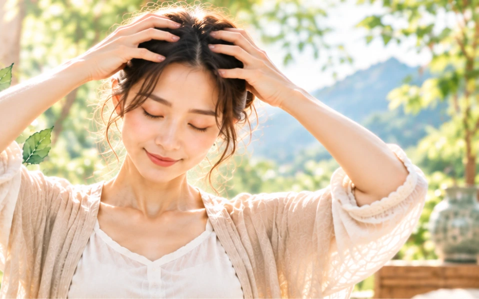

「指梳」 顧名思義就是以手指代替梳子來梳頭，別以為這只是個稀鬆平常的小事，在古代的時候，它可是有個響亮的名稱呢，就叫做「神仙洗頭法」。
具體的操作方式非常簡單，首先是要微微張開十指，用指腹的部分自髮際前緣開始，雙手一前一後、一左一右往頭髮後端梳理，進行的時候要輕要柔，不可又猛又快，循環往復進行數次之後，可以用手抓住一束頭髮，稍微握緊一下之後馬上鬆開，這個動作就叫做「扯髮」，在完成整個動作之後，會感覺到整個頭部非常清爽，不僅可以按摩頭皮，還可以疏通經穴，令髮緩白。
中醫認為「頭為諸陽之會，百脈所通」，人頭頂「百會穴」的名稱，就是由此而來，百會穴的位置在兩耳尖與頭頂正中央的相會處，通過簡單的指梳按摩，不只可以疏通血脈，還可以保健頭部，可以說是一舉數得。
據說慈禧太后每天起床第一件事，就是讓太監李蓮英為她梳頭按摩，李蓮英共陪伴慈禧太后近53年之久，慈禧還為他打破了雍正朝立下的「太監品級以四品為限」的皇家祖制，封李蓮英為正二品總管太監，統領全宮所有宦官，可見得學會梳與按摩，是很重要的一件事呢。
歷史上許多有名的文人墨客也都是此道的愛好者，晉朝竹林七賢之一的嵇康曾經提到：「春三月，每朝梳頭一、二百下，壽自高。」北宋大文豪蘇東也曾說過：「梳頭百餘下，散髮臥，熟寢至天明。」南宋詩人陸游堅持每天晨起後梳頭，傳說他到了晚年居然在滿頭白髮中又長出了一些黑頭髮。
在做「指疏」的時候，要特別注意一件事，那就是要小心頭皮屑，尤其是穿著深色衣服的時候，它會變成格外的耀眼，所以在做完指梳的動作之後，可千萬要記得拍拍衣服，別讓它成為吸引眾人目光的主角。
我都是在洗頭髮的時候做這個動作，一來是因為我頭髮短，所以會每天洗頭，二來是我把這個動作融入到我的生活習慣當中，久而久之，「指疏」就成了我日常生活中，最自然的一個部分，既不會忘記，也無須特意安排時間，就好像「敦踵」這個動作，每次只要去接我女兒放學的時候，我都會做這個動作，一開始的時候，還會擔心其他家長的眼光，誰知道一試之後就上癮了，反倒是成為一種習慣了。
將「身心放鬆術」的所有動作，融入到你的日常生活當中，它就會變成一種習慣，習慣之後就會變成自然，這是學習的關鍵成功因素。
「指梳」頭的動作不只可以刺激頭皮，還可以增進頭部的血液循環，在現代忙碌的社會裡，絕對是屬於簡單又有效的養生方法之一。